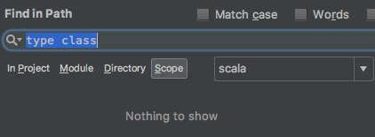

name: title class: center, bottom, white-text # Demystifying Type Class Derivation in Shapeless ??? <p> Ok, Lets get started <p> (slightly smile smile smile) <p> Hi everybody, thanks for coming here, and thanks scalaua cometee and Ruslan in particular for giving me a chance to be here <!-- ------------------------------------------------------------------------------------------------------------ --> --- count: false name: problem layout: true # Serialize case class? --- ### CSV/JSON/XML/... ```scala case class User(id: Long, name: String, active: Boolean) ... def toCSV[T](t: T) = ? ``` ??? Let's look at this simple User class definition and think a little about simple problem of serialization Whatever serialization - json/csv/xml - doesn't really matter. --- count: false ### CSV/JSON/XML/... ```scala case class User(id: Long, name: String, active: Boolean) ... def toCSV(u: User) = s"${u.id},{u.name},{u.active}" ``` ### Result: ```terminal scala> toCSV(User(1L, "test", true)) res1: String = 1,test,true ``` ??? Well we could do it somehow like this (for CSV) - it is the most simple to think about csv as we don't need to think about field names, right? simply calling toString on all of the fields and separating ti by comma but that does not feel alright well, it doesn't make any sense to write things like that - this is very poor code --- count: false ### CSV/JSON/XML/Whatever ```scala case class User(id: Long, name: String, role: Role, addr: Address, score: Double) sealed trait Role case class Address(street: String, house: Int) ... def toCSV(u: User) = s"${u.id}, ${u.name}, ${toCSV(u.role)}, ${toCSV(u.addr)}, ${u.score}" def toCSV(r: Role) = r match { case a: Admin => s"${a.id}, "; case c; Client => s"${c.id}" def toCSV(r: Address) = s"${a.street}, ${a.house}" ``` ### Result: ```terminal scala> toCSV(User(1L, "test", Admin(1L), Address("Wall str", 192), 1.0)) res1: String = 1, test, 1, Wall str, 192, 1.0 ``` ??? <p> What about more complex case? it quickly becomes a lot of boilerplate <p> Usually we have a big and complex domain model. Most of which we would like to be serialized automatically - Common apporaches to such problems are using either #### -- reflection #### -- writing serialization explicitly #### -- macro - Of course you could do macros for that and in fact most of the things we will be talking about today use macro under the hood one way or another <p> but using macro everytime we face such problem does not make a lot of sense <p> and it's not customizable enough - for instance if we want to partially serialize the original case class -- But agree with me - using macro introduces the whole new level of complexity -- its hard to compose and extend it - as for reflection - it is obviously not safe - Instead it would be great if we could have a layer of api we can rely on - .red[SO] we don't want to write serialization explicitly, we ant to be boilerplate free - we don't want to use reflection, we want to be typesafe - we want to do things easy and customizable, manipulating with some clear abstraction and API --- name: problem-csv class: center, middle, bigger-middle-code layout: false # Problem ```scala def toCSV[T](t: T): String = ??? ``` ??? <!-- As the first thing, lets think about a problem and why do we really need to derive anything at all and do all this fancy stuff at compile time. The real-life use-case to better "feel" what type of problems shapeless solves and what is the purpose of it existence. --> So that would be one of the problems we would like to address today - basically being able to define such generic function without writing much boilerplate <!-- ------------------------------------------------------------------------------------------------------------ --> --- name: scared count: false class: center, middle background-image: url(resources/f-astro-brick1.png) ??? .red.bold[AUDITORY] Is there anybody who has been scared when seen shapeless for the first time? .red.bold[raise your hand] or maybe confused? Well, this slide is somewhat ?correspond? to what I felt when started with Shapeless <!-- Moving in the dark space - I used some of the functionality provided but I felt like totally miss the whole point --> <!-- this can scare the shit out of you --> == Well I was able to do all kinds of dirty things with tuples - like merging them together, or subtracting but I was like - 'Man, you miss the whole point', and then when I looked into shapeless codebase - that made me want to commit a suicide. For real like this poor guy But then I realized there is nothing super-special there, it's not a magic. It's just plain scala code well its not that plain - but there are certain technics which if you are not aware of - make you feel very confused And I was very impressed by the beaty and elegence of this library at the same time So if you feel confusion - then leave it - there is no magic in here - it is just a scala code And we will try to to demistify today ome of the techniqes used in the library. This is not going to be an expert guide - I'm not an expert in it - I will just share with you a way to approach to understand the library Then hopefully you will feel more comfortable with it, being able to explore more advanced features <!-- ------------------------------------------------------------------------------------------------------------ --> --- name: agenda class: left # Agenda * #### Basics: ADTs, Products & Coproducts * #### Type Class pattern * #### Generic Derivation * #### `[live-code]` * #### Lazy, Aux * #### Debugging ??? <!-- The idea of derivation is used in many libraries and itself it is considered somewhat "library-thing"?? - like shapeless is made for those who write libraries - it is too complex for regular production usage // The level of a talk would be around middle scala-dev who just started to investigate shapeless library or at least have strong understanding what implicits in scala do and is aware of basic capabilities of a type system in scala. --> <p> First of all we will to go through some basics and kind-of try to look at the ADT types and have a look at them from somewhat different,higher perspective <p> Then we will go through some basic definitions of What the HList and Coproduct are <p> And we will look at the generic representaions of ADTs <p> Then we will quickly go through type-class pattern and how can we encode it in Scala <p> And then we will try to do some livecoding covering some of the techniqes which are used in shapeless like Aux pattern and Lazy and we will leverage those for generic derivation examples - and will take a look at some of the aries of application of those patterns - basically where we can use it what is value? <p> <small>well I know you guys might not be familiar with a lot of words I've just used - but don't be confused we will go through all of it in a moment</small> <p> I hope I will bring to you some useful knowledge and some understanding of the core concepts and possibilities type-driven development can bring you in scala. <p> <li><h2> To understand what I'm talking about you should have at least a basic understanding of implicits in scala Without that knowledge this talk probably will not make a lot of sense to you <!-- But once you get familiar with technics and approaches - you start seeing use cases everywhere --> <!-- ------------------------------------------------------------------------------------------------------------ --> --- count: false layout: true --- name: model-domain class: center, middle, inverse # How do we model our domain? ??? In order to get there - lets start from the veryvery simple thing - How do we model our domain in scala? What are the basic instruments we usually use to represent objects from the real-life? <p> # .red.bold[auditory] --- count: false name: model-domain # How do we model our domain? .left-column[ ### case class / sealed trait ] .right-column[ - #### case class - #### sealed trait ```scala case class User(id: Long, name: String, active: Boolean, role: Role) sealed trait Role case class Admin(id: Long, special: Boolean) extends Role case class Client(id: Long) extends Role ``` ] ??? <p> Yes - thats easy - we use case classes to represent objects itself and theirs attributes and sealed traits to represent variance <p>They are really nice and declarative - they are concise - there is no boilerplate like with Java beans <p> What are the main problems with case classes? - They are very explicit - the name is bounded to representation <p> Its hard to compose them - it is really hard to extend them and it quickly becomes a lot of boilerplate (you can define common trait and stuff) <p> to deal with that we usually use some traits or we use composition - but it quickly becomes cumbersome and introdcues a lot of boilerplate <p> the problem with sealed is that it has a scope of one source file, its not that easy to create custom sealed families or extend existing ones <p> you can of course remove 'sealed' but then you loose the whole idea of being sealed <p> What are the other options? more generic? --- count: false # How do we model our domain? .left-column[ ### case class / sealed trait ### TupleN / Either ] .right-column[ - #### TupleN[...] extends Product - #### scala.Either / cats.Xor / scalaz.\/ ```scala type User = (Long, String, Boolean, Role) type Role = Either[Admin, Client] type Admin = (Long, Boolean) type Client = Long ``` ] ??? Going a little bit further - we could use tuples for certain things <p> at this point we abstracted over types of the fields - those are encoded now into the type parameters <p> Now we can write generic functions parameterized by types of the values contained in the tuple <p> we are ok with that, but we are not ok with the "size" of the data, we want to abstract over the size or .red.bold[arity] of the case/class/tuple <h2>WE WANT TO ABSTRACT OVER ARITY</h2> --- count: false # How do we model our domain? .left-column[ ### case class / sealed trait ### TupleN / Either ] .right-column[ - #### Tuple.red.bold[N][...] extends Product - #### scala.Either / cats.Xor / scalaz.\/ ```scala type User = (Long, String, Boolean, Role) type Role = Either[Admin, Client] type Admin = (Long, Boolean) type Client = Long ``` ] ??? and kind of - move that N into type parameter --- count: false # Abstracting over arity .left-column[ ### case class / sealed trait ### TupleN / Either ### HList / Coproduct ] .right-column[ - #### HList - #### Coproduct ```scala type User = Long :: String :: Boolean :: Role :: HNil type Role = Admin :+: Client :+: CNil type Admin = Long :: Boolean :: HNil type Client = Long :: HNil ``` ```scala val admin: Role = Inl(2L :: true :: HNil) val sandy: User = 1 :: "Sandy" :: true :: admin :: HNil // res5: User = 1 :: Sandy :: true :: Inl(2 :: true :: HNil) :: HNil ``` ] ??? here comes heterogenous list and coproduct <p> as the most generic form we can get here <p> yeah, just a little bit later we will see what we can do with them <!-- ------------------------------------------------------------------------------------------------------------ --> --- name: adts layout: false class: left ## ADT .red.bold[*] <div id="adts-table"> <div id="adts-left"> <div class="adts-header"><h3><strong>AND</strong> types</h3></div> <div class="adts-cell"><h4>case class</h4></div> <div class="adts-cell"><h4>Tuple </h4></div> <div class="adts-cell"><h4>HList </h4></div> </div> <div id="adts-right"> <div class="adts-header"><h3><strong>OR</strong> types</h3></div> <div class="adts-cell"><h4>sealed trait</h4></div> <div class="adts-cell"><h4>Either </h4></div> <div class="adts-cell"><h4>Coproduct </h4></div> </div> </div> ```scala case class User(id: Long, name: String, active: Boolean, role: Role) sealed trait Role case class Admin(id: Long, special: Boolean) extends Role case class Client(id: Long) extends Role ``` .footnote[.red.bold[*] Stands for Algebraic Data Type] ??? And all those things are called ADT <p> <p>and case class badically represents algebraic product or (carthesian product) <p>Yes, so this can be summarized - as case classes are logical AND types <p>and sealed traits are logical OR types <p>User is = id AND name AND active AND role <p>Role is = Admin OR Client <p>I think that should be pretty straightforward <p>.red[SO] the essential thing to remember here is that - HList - is generic representation for case class and Coproduct - is generalized Either which can contain arbitrary <p> <AUDIENCE> Is everybody clear with that? <!-- ------------------------------------------------------------------------------------------------------------ --> --- count: false exclude: true name: adt-arity layout: false # What about ADTs? Abstracting over arity -- exclude: true count: false ## _How to abstract over arity of a product?_ kind-of move this TupleN to Tuple[N] ??? so the arity is basically number of fields Well we will see later <!-- ------------------------------------------------------------------------------------------------------------ --> --- name: hlist # HList <!-- <h1><span style="color: #DDD">Product</span> HList</h1> --> ```scala val hlist = 1 :: "one" :: 1L :: HNil // res0: shapeless.::[ // Int,shapeless.::[ // String,shapeless.::[Long, // shapeless.HNil // ] // ] // ] = 1 :: "one" :: 1L :: HNil hlist.head // Int hlist.tail.head // String hlist.tail.tail.head // Long val s = hlist.select[String] // returns "one". demo.select[List[Int]] // Compilation error. demo does not contain a List[Int] ``` ```scala take, head, tail, map, flatMap, zip ``` ??? So lets take more precise look at HLists <p> .red.bold[AUDITORY] Is anybody here who has never heard of HList? <small>if not - The HList is a kind of a list which can hold elements of different types and it holds type information about all of them</small> <p> So the instance of HList basically looks like this: (probably most of you've seen): <p> And you can do all kinds of dirty things with that <p> .red[AND] if you look at type - you can see it is just a nested structure <p> The form it is written here - is using infix syntax which makes them really nice to work with in scala BTW - in typelevel 2.12 fork of scala - the type output can be of the same form as value - written in infix style <p> and it looks very similar to regular scala List builder --- count: false name: hlist-def # HList ### Definition: ```scala sealed trait HList case class ::[H, T <: HList](head : H, tail : T) extends HList // HCons case object HNil extends HList ``` ??? > starts from the very simple idea of recursive types something beautiful about FP - the simpler idea is the better it composes This is a way to abstract over arity So this basically a type recursion and this is something you can see in a btw in Typelevel scala 2.12 the annotation @showAsInfix was added which enables infix type printing in console (move below - after HList or when complex structure goes) going further for a minute - this is something which can help debugging naming Product <-> HList The idea behind HList is very very simple - .. recursive types The capabilities of type system in Java is enough to implement this - it will take you 20-30 lines or any other language - the plus of scala is that it allows infix type syntax which make possible following notation (A1 :: A2 :: … :: HNil) <trait definition> If we would deconstruct it into regular prefix form, it would look like: ```scala val user = ::(1L, ::() ) ``` So, the infix type constructing syntax enables this beautiful style, --- count: false template: hlist-def ### List Definition: ```scala sealed trait List[+A] case class ::[A](head: A, tail: List[A]) extends List[A] case object Nil extends List[Nothing] ``` ??? > --- name: coproduct # Coproduct Once you feel comfortable with an HList - for Coproduct it is quite similar ```scala sealed trait Coproduct sealed trait :+:[+H, +T <: Coproduct] extends Coproduct case class Inl[+H, +T <: Coproduct](head : H) extends :+:[H, T] case class Inr[+H, +T <: Coproduct](tail : T) extends :+:[H, T] sealed trait CNil extends Coproduct ``` Usage: ```scala // 'kind-of' Either[Int, String, Boolean] type Co = Int :+: String :+: Boolean :+: CNil val co1 = Inl(42L) // Int :+: String :+: Boolean :+: CNil val co2 = Inr(Inl("forty-two") // Int :+: String :+: Boolean :+: CNil val co3 = Inr(Inr(Inl(true)) // Int :+: String :+: Boolean :+: CNil ``` ??? > Pretty much the same thing goes with Coproduct <p> but unlike HList.Cons - it has two variants - either holding a value or a tail which is also either a value or tail <p> and here is the usage of it <p> unlike HList - we can't use the same syntax to construct <p> so overall - the Coproduct can have only one value but still preserves type information about all values that can be contained in it. And the value of it determined by the "path" made by these InL and InR <p> Unlike HNil - CNil doesn't convey any information - so this achieved through not having any value for CNil (sealed trait) <p> <p> <p> .red[BTW] - the strange HList name is because Product was already taken in scala library. So the creator of the library chose HList name > <!-- ------------------------------------------------------------------------------------------------------------ --> --- name: generic1 class: inverse, middle, center count: false # shapeless.Generic ??? - But how can we go from case class to HList representation? - One of the essential instruments in shapeless is a Generic ?utility? - which provides us with a nice mechanism to convert between Product representation (means case class / sealed trait) and its generic representations (HList/Coproduct) - Its called Generic --- name: generic2 # Generic ```scala import shapeless.Generic case class User(id: Long, name: String, active: Boolean) val generic = Generic[User] // res0: shapeless.Generic[User]{type Repr = shapeless.::[Long, // shapeless.::[String, // shapeless.::[Boolean, // shapeless.HNil // ] // ] //]} ``` ??? And it gives us a possibility to convert case class into HList --- count: false name: generic3 # Generic ```scala trait Generic[A] { type Repr def to(value: A): Repr def from(value: Repr): A } ``` ### Usage: ```scala scala> val user = User(1L, "josh", true) user: User = User(1,josh,true) scala> generic.to(user) res2: res1.Repr = 1 :: josh :: true :: HNil scala> generic.from(res2) res3: User = User(1,josh,true) ``` ??? - looks pretty straitforward - there are type of the generic representation and two methods to convert to and from generic representation <!-- - here is a trait which defines and interface of this Generic object - as you can see it has this abstract type member - which is not defined here - but it was defined in the instance we summoned for the user previously. --> - This is how we can use it --- count: false name: generic4 # Generic ```scala trait Generic[A] { * type Repr def to(value: A): Repr def from(value: Repr): A } ``` ### Usage: ```scala scala> val user = User(1L, "josh", true) user: User = User(1,josh,true) scala> generic.to(user) res2: res1.Repr = 1 :: josh :: true :: HNil scala> generic.from(res2) res3: User = User(1,josh,true) ``` ??? - I want to pay your attention to this 'type Repr' - the instance of this trait holds the generic representation type - which is either HList or Coproduct depending on the type of the value we supplied with type A <!-- ------------------------------------------------------------------------------------------------------------ --> --- name: type-class class: top, white-text, right count: false # Type Class pattern ??? Ok, lets leave HLists stuff on the side just for a moment - the type class pattern <p> Well, as you can see - an astronaut is a little bit overwhelmed here but thats understandable, well.. --- # Type Class pattern ### scala standard library #### - Numeric (Collection's `sum, product, min, max`) #### - Ordering (Collection's `sorted`) #### - CanBuildFrom (whole collections api) ##### - IsSeqLike ##### - IsTraversableOnce ### Cats, Scalaz (all of the functional abstractions like Functor, Applicative, Monad, ...) <!--  --> ??? Although certain core functionalities in scala standard library are built across Type Class pattern there are only a few mentions of it in the whole codebase. <p> And this is kind of strange to me. <p> Here are some of the examples from the standard library <p> - Type classes are all over the place <p> The most familiar to everybody should be Ordering <p> So whenever you do sorting in scala you use type class pattern. - All of the FP primitives like Functor/Applicative/Monad are defined in popular FP libraries like scalaz/Cats using this pattern --- # Type Class pattern .left-column[ ### scala.Ordering ] .right-column[ ```scala /** * Ordering is a trait whose instances each represent * a strategy for sorting instances of a type. * ... */ trait Ordering[T] extends Comparator[T] { /** * Returns an integer whose sign communicates * how x compares to y. */ def compare(x: T, y: T): Int } ``` ] ??? .red[Auditory] Btw, how many of you feel like you are not familiar with type class pattern? <p>In order to understand lets take a look at the simplified version of Ordering trait in scala library <p> BTW As you can see it implements Java comparator - so type class pattern was used by many of us long ago in Java (if you come from java to scala) --- name: ordering-inst count: false # Type Class pattern .left-column[ ### scala.Ordering ### Definition ] .right-column[ ```scala trait Ordering[T] extends Comparator[T] { def compare(x: T, y: T): Int } ``` ] ??? - so the basic building blocks of the Type Class pattern are - definition <p> as a parameterized trait becuase if its not parameterized then the whole pattern doesn't make sense as there can be only one instance of it --- count: false # Type Class pattern .left-column[ ### scala.Ordering ### Definition ### Instances ] .right-column[ ```scala trait Ordering[T] extends Comparator[T] { def compare(x: T, y: T): Int } ``` ```scala object Ordering { implicit val intOrd: Ordering[Int] = new Ordering[Int] { def compare(x: Int, y: Int) = lang.Integer.compare(x, y) } implicit val longOrd: Ordering[Long] = new Ordering[Long] { def compare(x: Long, y: Long) = lang.Long.compare(x, y) } ... } ``` ] ??? - instances, usually defined in a companion object - Why in companion object you may ask - well, you can put it whatever you want - (and thats a good) but then you need to import them explicitly - companion - is the scope where compiler will search for implicits without special imports (((Although it will search there in the last turn))) --- count: false # Type Class pattern .left-column[ ### scala.Ordering ### Definition ### Instances ### implicit parameter ] .right-column[ ```scala trait Ordering[T] extends Comparator[T] { def compare(x: T, y: T): Int } ``` ```scala object Ordering { implicit val intOrd: Ordering[Int] = new Ordering[Int] { def compare(x: Int, y: Int) = lang.Integer.compare(x, y) } implicit val longOrd: Ordering[Long] = new Ordering[Long] { def compare(x: Long, y: Long) = lang.Long.compare(x, y) } ... } ``` ``` scala def sorted[T](implicit ord: Ordering[T]): Repr ``` ..or context bound ``` scala def sorted[T: Ordering]: Repr ``` ] ??? - and implicit parameter or context bound <p> - So, this are the main building blocks of the Type Class pattern. <p> - To distinguish it - you should start from looking up a parameterized trait. And if its used somewhere as an implicit parameter to some function or class - then it is typeclass pattern. And instances can be defined anywhere - but usually they are in a companion object --- # Type Class pattern .left-column[ ### scala.Ordering ### Definition ### Instances ### implicit parameter ### Usage: ] .right-column[ ```scala List(1, 3, 2).sorted // at this point compiler is searching implicit value // in the ?global?, local scope, imported scope, companion object ``` ] ??? - Well, the implicit search is somewhat more sophisticated - and there probably are some other scopes - but thats beyond this presentation <p> This is vere functional type of polymorphism <p> instead of overloading in OO style - you are "overloading " <p> btw it come from haskell <p> if you just recently switched from Java then think about Comparable and you will understand typeclasses <p> When you see this huge definitions - start from looking for some parameterized trait with one or few methods <p> this is a way to distinguish a typeclass pattern <p> And again, you should start to read that code from that trait definition - do not pay a first attention to implicits to not to be overwhelmed <!-- ------------------------------------------------------------------------------------------------------------ --> --- name: simulacram # Type Class pattern ### https://github.com/mpilquist/simulacrum ```scala @typeclass trait CSVSerializer[A] { @op("§") def serialize(a: A): String } ``` ??? This macro produces quit a lot of noise but that is considered as a full canonical type-class pattern implementation in scala btw in Haskell - type classes are first-class language primitives which makes them much easier to work with First-class construciton in Haskell 98 - Eq, Ord, Enum, Bound, Show, Read THere is a library named simulacrum which enables it fo;r scala and btw Cats uses it - all of the type classes in that library are defined using this macro annotation Well, it is just simple macro but maybe someday it could start to be a part of scala language reserved word the same way we have `case class` generating a whole bunch of stuff with hascode equals getterss setters and stuff I bet there is probably some PR for that already Really nice way for expressing although it's obvious that this is just a workaround and kind-of temporary solution until real first-class support will be added. I believe -- count: false ```scala trait CSVSerializer[A] { def serialize(x: A, y: A): A } object CSVSerializer { def apply[A](implicit instance: CSVSerializer[A]): CSVSerializer[A] = instance trait Ops[A] { def typeClassInstance: CSVSerializer[A] def self: A def §(y: A): A = typeClassInstance.append(self, y) } trait ToCSVSerializerOps { implicit def toCSVSerializerOps[A](target: A)(implicit tc: CSVSerializer[A]): Ops[A] = new Ops[A] { val self = target val typeClassInstance = tc } } ... ``` --- # CSV Serializer ## Type Class definition ```scala trait CSVSerializer[A] { def serialize(a: A): List[String] } ``` ??? <p> - So lets return to our initial problem with serialization <p> - Lets define a type class which will define an interface for serializing functionality <p>as you can see there is no implicits or anything scary here - it just very abstract definition of some functionality <p>you capture very basic functionality into interface <!-- <p> For those of you who still feel a confusion with type-class pattern - you can think about implicit class on steroids --> <!-- <p> multiple implicit class definitions with the same interface - which allows you to extend functionality --> <!-- <p>the very functional type of polymorphism - when we extend functionality of some class without touching it --> <!-- <p>on the contrary of inheritance in OOP polymorphism --> <!-- implicit class on steroids - what if you need to provide different implementations depending on some polymorphic type? --> -- count: false ### lets define some helpers.. ```scala object CSVSerializer { def apply[A](implicit serializer: CSVSerializer[A]): CSVSerializer[A] = serializer implicit class WithSerialize[A](a: A) { def toCSV(implicit serializer: CSVSerializer[A]) = serializer.serialize(a).mkString(",") } } ``` ??? <p> And lets define some helpers in companion object <p> then lets define some instances - lets say we need to serialize Int <!-- thats it - this is the basic idea - once you start using type-classes and build your functionality around it at some point you will have to deal with ADTs --> <!-- ------------------------------------------------------------------------------------------------------------ --> --- layout: false name: live-code1 class: white-text, live-code1 count: false # deriving serializer [live-code] ??? All right - Now comes interesting part - so lets return to our example with CSV encoding and lets try to do some live-coding .. live code basic instances for csv encoding implicitly deriving instance for HList problem with Aux Lets look at another example <livecode> <!-- ------------------------------------------------------------------------------------------------------------ --> --- name: aux # Aux Pattern ```scala scala> trait Foo { type T } // defined trait Foo scala> def f(foo: Foo, t: foo.T) = ??? * <console>:13: error: illegal dependent method type: parameter may only be * referenced in a subsequent parameter section * def f(foo: Foo, t: foo.T) = ??? ^ scala> ``` ??? - The reason of existence of this pattern is rather simple but one might be confused if you are not aware of this reason and your just see Aux all over the place - Lets take a look at this simple example -- count: false ## Solution: ```scala scala> trait Foo { type T } // defined trait Foo scala> type Aux[T0] = Foo { type T = T0 } // defined type alias Aux scala> def f[T](foo: Aux[T], t: T) = ??? // f: [T](foo: Aux[T], t: T)Nothing ``` ??? - to workaround it - we simply move it to type parameter - and I want to pay your attention to that this type parameter is inferred from the value we are supplying - thats why its called auxilary - because there is no meaning behind it except overcoming limitations which scala compiler exposes in this place - and it is used all over the place in shapeless --- name: aux1 class: bigger-middle-code # Aux Pattern ```scala type Aux[T, Repr0] = Generic[T] { type Repr = Repr0 } ``` ??? - so - here is how the Aux type looks like for Generic <!-- ------------------------------------------------------------------------------------------------------------ --> --- name: live-code2 class: live-code1 exclude: true count: false .. live code instances for products coproducts ??? <livecode> Instances for Coproducts can be derived in the similar way using the same technics as with HLists Once you understand how to use those technics with HList - there is nothing special with Coproducts <!-- ------------------------------------------------------------------------------------------------------------ --> --- name: divergence # Implicit divergence ### nested structure ```scala case class Account(id: Long, user: User) case class User(id: Long, name: String, active: Boolean) ``` ```scala /*1*/ CSVSerializer[Account] /*2*/ CSVSerializer[::[Long, ::[User, HNil]]] /*3*/ CSVSerializer[::[User, HNil]] /*4*/ CSVSerializer[User] * /*5*/ CSVSerializer[::[Long, ::[String, ::[Boolean, HNil]]]] // failed // diverging implicit expansion for type xyz.codefastdieyoung // .CSVSerializer[Long :: String :: Boolean :: shapeless.HNil] ``` the compiler sees the same type constructor twice and the complexity of the type parameters is _increasing_... --- count: false name: lazy # Lazy! ```scala import shapeless.Lazy implicit def HConsCSVSerializer[H, T <: HList](implicit * hSerializer: Lazy[CSVSerializer[H]], tailSerializer: CSVSerializer[T] ): CSVSerializer[H :: T] = { t => s"${hSerializer(t.head)}, ${tailSerializer(t.tail)}" } ``` wrap diverging implicit parameter... - ## it suppresses implicit divergence at compile time - ##it defers evaluation of the implicit parameter at runtime ??? - Lazy to the rescue! - it uses macro --- name: shapeless class: white-text background-image: url(resources/f-astro-shapeless.jpg) # shapeless ??? So, this is what derivation means - using type-classes we are able to derive instances for composite type while having instances for And what shapeless does is basically providing an instruments to work with ADTs in a generic way provides us a possibility to abstract over arity (number of arguments) and write functions like toCSV in a more generic fasion There are a couple of other minor items/possiblities in the library but the main one - is to asbtract over arity --- count: false layout: false name: generic-programming class: bigger-middle-code exclude: false # Generic programming ```scala def fmap[A](f: A => B): F[B] = ??? ``` ??? At this point we can give some definition to what generic programming is and speaking very simple - whenever you use generics you do Generic programming and that means you do a kind of programming when you write algorithms in terms of not-yet defined types In such ways we are generalizing over common properties of types and functions However In some cases it's easier to abstract over particular property - like type of the field of the User class in other cases - it's harder like arity - <!-- ....... concretising too early - lean software development methodologies - make a decisions as late as possible --> one of those techincs - is type definition very simple at first - it enables a lot more sophisticated in connection with implicits <!-- ------------------------------------------------------------------------------------------------------------ --> --- name: debugging class: white-text, background-cover count: false exclude: true # Debugging implicits ??? - once you have a lot of nested fields - its a problem - compiler will end up with non-descriptive messages ... - implicitly / reify --- name: debugging-alt class: white-text, background-cover count: false # Debugging implicits --- # Debugging implicits - ### implicitly - ### the - ### reify - ### @showInfix - ### and of course - IDE short-cuts to lookup implicit values ??? at least it fails at compile time and will not produce runtime errors, (unless you are mixing into different implicit and you don't how to lookup them in IDE) of course - you should know otherwise it becomes a pain the ass to lookup which implicit value has been supplies into the method for those who are <in Idea - these are - <show>> Once you know these shortcuts - you should feel comfortable working with type-classes, AND you shoudl use IDE which supports this otherwise it makes you feel something like that... <!-- ------------------------------------------------------------------------------------------------------------ --> --- count: false name: implicits-nose-itches background-image: url(resources/itch.jpg) class: bottom, center, background-cover # MY NOSE ITCHES <!-- ------------------------------------------------------------------------------------------------------------ --> --- count: false layout: true exclude: true # Generic ### what if we would encode Repr as type parameter rather than type member? --- exclude: true ```scala trait Generic[A, Repr] { def to(value: A): Repr def from(value: Repr): A } ``` --- exclude: true count: false name: generic-shape ```scala trait Generic[A] { * type Repr def to(value: A): Repr def from(value: Repr): A } ``` then we can't reuse it in some other context ??? This is what enables And enables us to derive type-class instances for arbitrary case-classes <!-- ------------------------------------------------------------------------------------------------------------ --> --- exclude: true count: false class: live-code1 layout: false # product Last [live-code] ??? Ok, lets try to do something interesting with HLists and Type Classes << prepared with type class and test printlns >> - define apply - define HNil size - define HCons size - <AUDITORY> ADVICE WITH generic.AUX????? - ?? what else - we can derive instance of this class for all Products (case classes) - example (tuple is a Product itself ) - Java8 functional interfaces - I think its really great, makes cleaner syntax <<<<< PROBABLY One of the few usefull things of JAVA8 >>>>> - preferrable style would be to put implicits into companion object - because this is default scope of where <AUDITORY> <AUDITORY> Does everybody follow me at this point? Is everything clear with this example? <!-- ------------------------------------------------------------------------------------------------------------ --> --- exclude: true count: false # __ shapeless.ops.hlist._ __ > operations over generic representations * ## Size * ## Last * ## Reverse * ## Partition * ## Filter * ## ... ??? In fact, the functionality we have just defined - already exists in shapeless library And there are a whole bunch of other stuff - the definition of <!-- ------------------------------------------------------------------------------------------------------------ --> --- exclude: true name: tuple-ops # Tuple ops ```scala (1,2,3).head // res0: Int = 1 (1,2,3).tail // res1: (Int, Int) = (2,3) (1,2,3).last // res2: Int = 3 (1,2,3).size // res3: Int = 3 // todo - dome better examples ``` ??? Thats where all those tuple extensions come from <!-- ------------------------------------------------------------------------------------------------------------ --> --- exclude: true class: inverse, middle, center count: false # Dependent types ### type members ### singleton types ### implicit resolution ### neat syntax <!-- - neat syntax enabled by implicit's sugar --> ??? this makes scala todo <!-- ------------------------------------------------------------------------------------------------------------ --> --- exclude: true name: dep-fns # Dependently typed functions We've already seen a Last type class Lets think about application of it and remind classic scala function definitions: <!-- ------------------------------------------------------------------------------------------------------------ --> --- exclude: true count: false template: dep-fns ```scala trait Function0[R] { def apply(): R } trait Function1[T, R] { def apply(t: T): R } ... def func0[R]: Unit => R def func1[T, R]: T => R ... ``` ??? Here we have regular --- exclude: true count: false template: dep-fns ```scala trait DependentFunction0 { * type Out def apply(): Out } trait DependentFunction1[T] { * type Out def apply(t: T): Out } ... ``` ## Now its possible to have one function __DEPEND__ on other during implicit resolution ??? The idea is to have a type inside a trait along with function apply method So the only thing that has been changed here is that we moved the result type of the function into type field And the result of the function now - is not just a value provided by the execution of 'apply' method - but the type member 'Out' contained in the instance of that function can be considered the result of the function too Thereby we have a Type which depends on a value. or Dependent type <h2>And to summarize</h2>: here we can have an instance of function based on the input type (using type-class plus implicits), and then instance of that function provides output type. In other words output type depends on input type - so that means we can build a functions over types. Which makes Scala Dependent type language basically. So using such technic we can build a chains of dependant functions. We will see later how we can use that to build something really interesting <h2>BTW</h2> In shapeless there are such DependentFunc traits to kind-of ?summarize? all such functions <!-- ------------------------------------------------------------------------------------------------------------ --> --- count: false exclude: true # Going a little bit further - values dependent on types - types dependent on types (type constructors) higher-kinded types - types dependent on values (dependent types) -- exclude: true count: false ## Kinds \* -> \* \* x \* -> \* https://youtu.be/hzf3hTUKk8U?t=634 -- exclude: true count: false ```scala val id: Int => Int ``` ```scala type Id[X] = X ``` -- exclude: true count: false ```scala trait λ { type ap[_ <: λ] <: λ } type I = λ{type ap[X<:λ] = X } type K = λ{type ap[X<:λ] = λ{type ap[Y<:λ] = X }} type S = λ{type ap[X<:λ] = λ{type ap[Y<:λ] = λ{type ap[Z<:λ] = X#ap[Z]#ap[Y#ap[Z]] }}} ``` ??? > In order to provide some even more context - lets look at the , and try to kind of categorize these /?do not talk about something youre not fully familiar with//// btw - such categorization comes from mathematic logic and type theory - there is something called Lambda cube //// <!-- ------------------------------------------------------------------------------------------------------------ --> --- exclude: true class: inverse, middle, center count: false # LabelledGeneric <!-- ------------------------------------------------------------------------------------------------------------ --> --- exclude: true # What has been lost here? ```scala type User = Long :: String :: Boolean :: Role :: HNil type Role = Admin :+: Client type Admin = Long :+: Boolean :+: CNil type Client = Long :+: CNil ``` ```scala val sandy: User = 1 :: "Sandy" :: true :: admin :: HNil val admin: Role = Inr(2 :: HNil) ``` ??? Ok, lets return to this User class representation <AUDITORY> Has anybody noticed that something is missing here? Which part of initial User class definition has been lost here? <AUDITORY> Any thoughts? Which essential part of a User class has been lost here? --- exclude: true count: false # Capture field names? ```scala // label label label // || || || // \/ \/ \/ case class User(id: Long, name: String, active: Boolean) // /\ // || // label ``` ??? Right, We've lost information about field names,.. (and in fact - class name as well) In case of CSV serialization - it is sufficient, but if we need to serialize for instance to Json or XML we need to perserve field names as well --- exclude: true count: false # LabelledGeneric ```scala val user = 1 :: "Josh" :: true :: "admin" :: HNil val userLabelled = ("id" ->> 1) :: ("name" ->> "Josh Travis") :: ("active" ->> true) :: ("role" ->> "admin") :: HNil ``` ```scala trait LabelledGeneric[T] { type Repr def to(t : T) : Repr def from(r : Repr) : T } ``` ??? To have a full representation of the real-world object we need to preserve information about field names meta information - field names. (think about jdbc ResultSets and database schema) There is really neat syntax for this in shapeless - using that double arrow operator But what lies behind this double arrow?? <!-- ------------------------------------------------------------------------------------------------------------ --> --- exclude: true name: phantom types layout: true # Accessing field name at runtime --- exclude: true .left-column[ ### Singleton types ] .right-column[ ```scala object Foo Foo.type // res0: Foo.type 1.narrow // res7: Int(1) = 1 true.narrow // res8: Boolean(true) = true "hello".narrow // res9: String("hello") = hello // and so on... ``` ] -- exclude: true count: false .right-column[ ```scala // scala 2.12 * val int42: 42 = 42 * val int42: 42 = 41 // will not compile ``` ] ??? As we all know there is a syntax for getting type of the 'object' value in scala And there of course exists only one such type for that singleton value But there is no such syntax for other literals in scala (we can't write 1.type) Using shapeless we can get such a type though using some (magin again) So you can have an instance which can be assigned only to itself - the type restricts And I want to pay your attention to that string singleton type - it preserves a value of the string - which is very interesting and valueable I think <h2>BTW</h2> the singleton types actually exist in scala for a long time in scala compiler but there were no syntax to use them in language syntactically (while writing code). There is a support in typelevel scala, and should be in scala2.12 (I havn't checked honestly) --- exclude: true count: false .left-column[ ### Singleton types ### Type tagging ] .right-column[ ```scala val tagged: String with Int = "1".asInstanceOf[String with Int] val str: String = tagged val int: Int = tagged // runtime ClassCastException ``` ### Shapeless: ```scala type FieldType[K, +V] = V with KeyTag[K, V] trait KeyTag[K, +V] ``` ```scala import shapeless.labelled.{KeyTag, FieldType} import shapeless.syntax.singleton._ val name = "Josh Travis" val labelledUserName = "name" ->> name // res1: labelledUserName: String with shapeless.labelled.KeyTag[String("name"), String] = "Josh Travis" ``` ] ??? There is one trick we can do with types in scala --- exclude: true count: false .left-column[ ### Singleton types ### Type tagging ## Putting together ] .right-column[ ```scala val josh = "Josh Travis" val labelledUserName = "name" ->> josh // res6: String with shapeless.labelled.KeyTag[String("name"), String] = "Josh Travis" ``` 1. #### creates singleton type ```scala String("name") ``` 2. #### creates tag with this type ```scala KeyTag[String("name"), String] ``` 3. #### tags original type with it ```scala String with KeyTag[String("name"), String] ``` ] --- count: false name: witness exclude: true .left-column[ ### Singleton types ### Type tagging ## Witness ] .right-column[ ### How can we retrieve the field name at runtime? ```scala val labelledUserName = "name" ->> "Joshua Travis" def getFieldName[K, V](value: FieldType[K, V]) (implicit witness: Witness.Aux[K]): K = witness.value def getFieldValue[K, V](value: FieldType[K, V]) = value getFieldName(labelledUserName) // res15: String = name getFieldValue(labelledUserName) // res10: String = Josh Travis ``` ] ??? So now we have our field tagged with information about its name But that exists only at compile time - it is encoded through singleton type How can we get a field name at runtime? Only then it becomes useful for us! Here comes shapeless Witness ??????? btw - I'm using TypelevelScala2.12 btw - typelevel scala supports singleton types already --- exclude: true ## Again ```scala A with B ``` ??? Again: so we can use this type mixing technique to tag type A with type B --- exclude: true count: false ## Again ```scala type A = ??? ... case class Foo( field: A ) ``` -- exclude: true count: false ```scala type Field = A with KeyTag[String("..."), A] ``` ??? and as for type B we would use a type KeyTag which holds information about type of the field and name of the field in the form of the singleton so we get a new type which preserves information about field name and type of the field -- exclude: true count: false ```scala val witness = implicitly[Witness.Aux[Field]] ``` ??? to get field name as a runtime value string we use implicitly summoned Witness instance like this -- exclude: true count: false ```scala witness.value = "..." // field name ``` <!-- ------------------------------------------------------------------------------------------------------------ --> --- exclude: true layout: false name: labelledgeneric-type # LabelledGeneric ```scala case class User( id: Long, name: String, active: Boolean ) ``` ```scala scala> LabelledGeneric[User] res0: shapeless.LabelledGeneric[xyz.codefastdieyoung.User]{ type Repr = ::[Long with KeyTag[Symbol with shapeless.tag.Tagged[String("id")],Long], ::[String with KeyTag[Symbol with shapeless.tag.Tagged[String("name")],String], ::[Boolean with KeyTag[Symbol with shapeless.tag.Tagged[String("active")],Boolean], shapeless.HNil ] ] ] } = shapeless.LabelledGeneric$$anon$1@74032484 ``` ??? So this two techniques are used in shapeless to get the labelled representation of case class And here is how the resulting type looks like each type of the field is labelled by its field name Using this we can extend our previous example of csv serialization to JSON serialization once you understand previous example - there just need to extend it little bit to handle field names <!-- ------------------------------------------------------------------------------------------------------------ --> --- exclude: true layout: false name: json-serialize # Serialize json at compile time ### [github.com/fommil/spray-json-shapeless]() ### [github.com/circe/circe]() ### [argonaut]() ```scala val user = User(1, "Jimmy", true, "admin") val json = user.toJson ``` Gives: ```json { "id": 1, "name": "Jimmy", "active": true, "role": "admin" } ``` ??? spray-json - Probably the most concise json serialization library - it uses exactly the same technics of derivation We will not once you have understand the previous example with CSV encoding - the Json encoding is pretty straightforward using the same technics deriving instances for ADTs with just added field labels But we will not do json serialization today Instead we will try to do something really ambitious: <!-- ------------------------------------------------------------------------------------------------------------ --> --- exclude: true class: live-code1 name: live-code-migration count: false # case class migrations [live-code] ??? ... .. <livecode> chaining dependent type functions (with Aux) in fact dependent function in scala 2.12 has this one-method funciton first-class support which makes them look as regular function <!-- ------------------------------------------------------------------------------------------------------------ --> --- exclude: true # Monoid typeclass derivation Just to tell you a few words more about what you can actually do with all of this ??? We will not reinvent the wheel and will use a Monoid type class from the famous Cats library <!-- ------------------------------------------------------------------------------------------------------------ --> --- exclude: true # use-cases other real-life use cases not only for designing new libraries any kind of typesafe ADT serialization/deserialization any until we have some time - lets go through some of the other use cases or other operations you can do you can do your own implementation of ops Poly <!-- ------------------------------------------------------------------------------------------------------------ --> --- exclude: true count: false # TypeClass Type Class ??? We've already seen a derivation for <confused astronaut> <!-- ------------------------------------------------------------------------------------------------------------ --> --- name: real-life background-image: url(resources/back-to-earth.jpg) class: top, white-text, background-cover count: false exclude: true # Back to Earth Again... ??? That all looks very nice and its a lot of fun, but - there are certain problems too .red[no-no-no-no-no] WELL, many people consider shapeless as a tool a library to use to construct other libraries I’m not particularly agree The essence of shapeless, from my point of view, is to use it in a very minimalistic way The use-cases are all over the place and in your current project you can find numerous of places where you can reduce boilerplate as there are a lot of I don't think that HList and Coproducts should be used to model entire domain - well it can but from my perspective you should always choose the minimal abstraction - as premature optimizations are a root of all evel as we all know the power if it is being able to convert representation while you need do some stuff and then convert back i want to pay your attent to the very minimalistic usage of shapeless api - and its usually like that this is what makes shapeless neat and elegant and this small thing enables generality and makes scala so versatily <!-- ------------------------------------------------------------------------------------------------------------ --> --- # Issues * ## Compilation Times ** ** * ## inductive implicits * ### typelevel fork 2.11+ * ### `-Yinduction-heuristics` * ## runtime overhead * ## ... --- exclude: true count: false # typesafe scala 2.12 <!-- ------------------------------------------------------------------------------------------------------------ --> --- name: conclusion background-image: url(resources/f-astro-car.jpg) class: white-text count: false # Conclusion ??? <p> once you master these technics you start seeing the use cases all over the place <p> - even as for serialization thats not that simple - in a simple case - it is simple <p> - but when you want to customize it - like partially serialize <p> Serialization - is just an example I chose to show a derivation technic <p> simple cases are - anytime you do operations with tuples and want to flatten them <p> Coproducts are very useful for error handling - to model errors <p> some - very interesting subject in scala - in java you can model the <p> As for derivation - whenever you operate with type-classes over simple types <p> you would like to define an applicative functor typeclass instance for arbitrary type-class <p> in some cases the solution exists in some library - and in shepeless itself there are a plenty of stuff under ops package you can use <p> - todo - always choose a minimal abstraction needed - So HLists and Coproducts are good for certain things especially for building rich api but they might not be that good as a main building blocks for your applications -- Here we can reference some of the core principles of lean methodologies choose minimal abstraction be driven by domain preliminary optimizations/generalizations as they are a root of all evil they are not Again - HList/Coproduc - are not an alternative wayof modelling your domain They are extremely powerful representations of your ADTs that you can use to perform very tricky things at compile time like fully typesafe serialization When going for the purity you may miss some very important thing - “practicality” When you are in production you still should keep something in your mind - always be driven by the domain needs and business goals unless you are making a research or building next generation of astronauts' <...> we are all tech guys and sometimes are too idealistic and “out-of-this-world” with our experiments Sometimes experiments may lead to I think its essential to keep in mind real use-cases which makes really very bad advert for such libraries and methodologies like shapeless Such a powerful tools doesn’t mean you have to use them everywhere in every possible situation in fact - Practical usage shoudl always be very concise - that makes such libraries and approaches so beautyful end: Well, scala exposes really great possibility of combining type-dependent with less-type safe mutable somebody would say that implicits are just some syntactic sugar - well yes and no - if <!-- ------------------------------------------------------------------------------------------------------------ --> --- name: whats-more class: inverse, middle, center ## Poly ## ops ## Lenses ## TypeClass type class ## Peano numbers ## Utils (the, not-compile, Typable) ??? There are a whole bunch of other stuff - generic ops - to - TypeClass - (yes, it's not a joke) to automate instances derivation for case classes for arbitrary Type Classes - peano - you can use them for instance to manipulate the size of HList at compile time or get type of the n-th element at compile time - lenses - much less-boilerplate then for instance scalaz. <!-- ------------------------------------------------------------------------------------------------------------ --> --- count: false name: astronauts-guide background-image: url(resources/astronauts-guide.png) ??? - you may wonder - what are those astronaut's pictures scattered across the entire presentation - well thats because of that awesome small book by Dave Gurnell - and actually this whole presentation was totally inspired by it - you can find it on shapeless github - and you can order <!-- ------------------------------------------------------------------------------------------------------------ --> --- count: false name: chill-out1 class: background-cover background-image: url(resources/astro-beer2.png) ??? - So don't be scared about shapeless - Let your types do work for you - so you can just get back and chill out Like this <!-- ------------------------------------------------------------------------------------------------------------ --> --- count: false name: chill-out2 class: background-cover exclude: false background-image: url(resources/astro-bong1.png) ??? Or maybe.. like this <p><strong>FUN></strong> ..Whatever you prefer) <!-- ------------------------------------------------------------------------------------------------------------ --> --- name: thanks # Thanks * ## [@twist522]() * ## [github.com/thatwist]() * ## [crossroadlabs.xyz]() * # [vote.scalaua.com]() ??? <!-- * ## [blog.codefastdieyoung.xyz]() --> - Small pieces of code from the presentation - you can find on my github page - So please follow by any of these links here and subscribe to something there whatever you will find - and don't forget about voting <p> thanks for coming) <!-- ------------------------------------------------------------------------------------------------------------ --> --- count: false template: chill-out1 ??? - .red[AUDITORY] BTW, Has anybody noticed anything wrong with this situation??))) - .red[AUDITORY] Here is a cookie for the right answer!! .red[CROSSROADS CUP / T-SHIRT] - He is in space suite!! He can't drink that beer!!!)) Ha-Ha - take the cookie, you won))
//